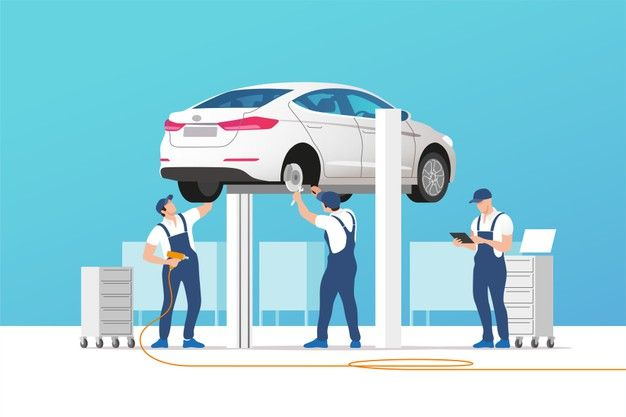
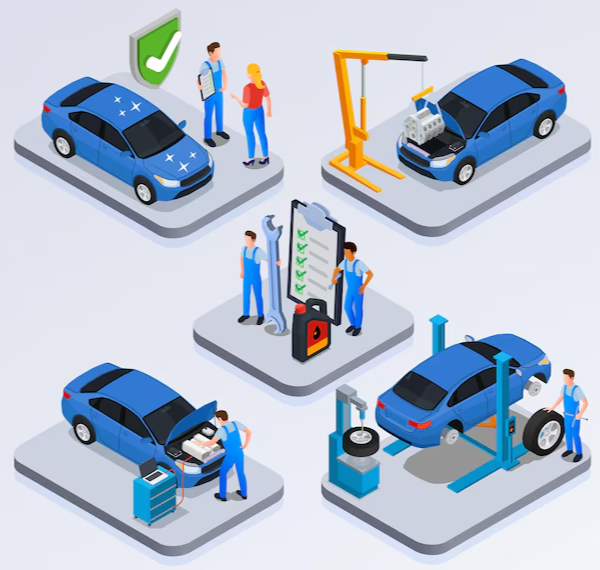

- Desorganização na gestão dos veículos, dificultando o controle e acompanhamento
adequados.
PROBLEMA
- Desorganização na gestão dos veículos, dificultando o controle e acompanhamento
adequados.
- Atrasos na entrega e no cumprimento dos prazos acordados com os clientes.
- Prejuízo financeiro devido à necessidade de retrabalho causados pelo esquecimento.
- Sobrecarga de trabalho nos colaboradores, uma vez que os veículos esquecidos podem
ocupar
espaço e recursos desnecessários.
- Perda da confiança dos clientes e possível migração para a concorrência.
- Aumento de reclamações e insatisfação dos clientes, afetando a reputação da oficina.
- Possibilidade de danos e deterioração dos veículos devido à falta do acompanhamento.

Uma plataforma de gestão de oficinas, garantindo agilidade
Solução
Uma plataforma de gestão de oficinas, garantindo agilidade
da informação dos veiculos em
manutenção.
- Facilitando o acompanhamento de serviços.
- Armazena informações dos veiculos em manutenção.
- Melhor atendimento ao cliente.
- Tomadas de decisões.
NICHO DE MERCADO
Oficinas mecânicas
Prestadores de serviço
Manutenção de equipamentos